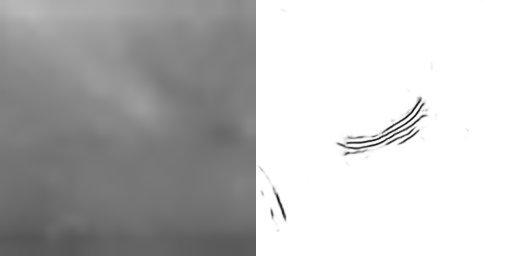
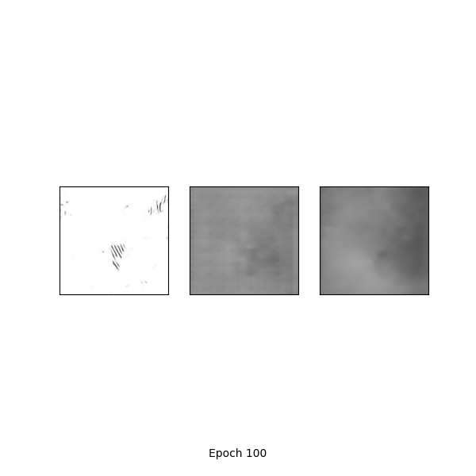
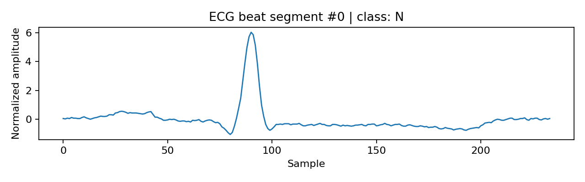
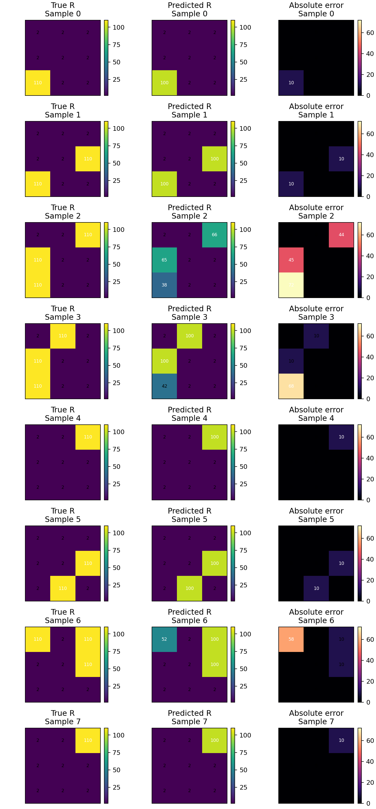

Image-to-Image Learning
Use paired WFM images to learn why a conditional GAN needs both a generator and discriminator.
Pick a real case study, choose the model workflow, inspect the data, run a training simulation, test the model, and write down what the metrics actually mean.
Select a module and learning question.
Inspect data type, labels, and split.
Set model options and watch training behavior.
Evaluate unseen examples and compare metrics.
Check concepts, metrics, and failure modes.
Modify code, test settings, and write a mini-report.
Use paired WFM images to learn why a conditional GAN needs both a generator and discriminator.
Use ECG beat segments to learn 1D CNNs, class imbalance, and accuracy vs macro-F1.
Use public fall/gait data and Holomotion-style features to learn sequence modeling and real-device validation.
Use current measurements to reconstruct a hidden 3x3 resistance map for sensor-based cell monitoring.
In this module, you explore a paired image-to-image learning problem. Your goal is to understand why a conditional GAN can learn a visual mapping from microscopy input to force-map-like output, and why the result still needs scientific validation.
The scientific question is whether one imaging modality can provide enough information to estimate another measurement that is harder or slower to obtain. The ML task is not classification. It is a conditional image-to-image mapping: input image in, predicted target-like image out.
Wrinkle microscopy image.
Aligned force-map-like image.
Pix2pix-style conditional GAN.
Does the generated output preserve scientifically meaningful structure?
If the model only learns global shape, what type of error might appear in the generated force-map-like image?
A conditional GAN is useful because it combines two pressures: make the image match the paired target and make the output look like a realistic target-domain image.
The generator learns to produce a target-like image from the input microscopy image.

A paired training image stores input and target domains in one file before preprocessing.
One aligned input-target image pair.
The same or nearly identical pair should not appear in both train and test.
The input image only. The target image is used for training loss and evaluation.
Use a fixed held-out test set so your result images are comparable across runs.
WFM GAN training is slow, so the online student version uses prepared checkpoints. Choose an epoch and inspect how the generated image changes. In the code version, students can change epochs, loss weights, and checkpoint selection locally.
More training can improve structure, but can also overfit.
Adds realism pressure from the discriminator.
Adds pixel-level target similarity, often smoothing details.
Checking local backend...
Load a saved checkpoint online, or run local training when the backend is available.

Run training first, then this panel will show the closest saved checkpoint for your selected epoch.
Go to Train, choose an epoch count, and run the guided training simulation.
1. Why is WFM framed as a paired image-to-image learning task?
2. What is one common effect of L1 reconstruction loss?
3. Short answer: Why is a realistic-looking generated image not enough for scientific use?
4. In a conditional GAN, what information is given to the generator?
5. What does the discriminator judge during GAN training?
6. Why should generated outputs be evaluated on held-out images?
7. Which situation would make the test result less trustworthy?
8. A generated WFM output preserves broad shape but loses fine texture. What is the best interpretation?
9. Which comparison is most useful in the Test step?
10. Short answer: Propose one validation experiment before trusting a generated scientific image.
Students should submit one figure, one setting table, and one paragraph that separates model performance from scientific proof.
Students use the provided GitHub code to run a small WFM experiment locally or inspect prepared checkpoint outputs online. The goal is not only to make a generated image, but to decide whether the image-to-image model learned a meaningful scientific mapping or only produced a visually plausible result.
Load a saved checkpoint or run the starter code. Produce one baseline test figure with input, generated output, and reference target.
Change one setting such as epoch count, GAN/L1 loss use, loss weight, or train/test split. Keep the same held-out test image for comparison.
Decide whether the generated image preserves meaningful structure, misses fine detail, shifts patterns, or creates a misleading smooth output.
Did the model learn a usable mapping from microscopy input to force-map-like target, or just learn target-domain appearance?
Use paired WFM samples or prepared checkpoints. Test on a held-out image that was not used to fit the model.
Run the baseline, change one setting, and save the new generated output or closest checkpoint result.
Submit two side-by-side triplets: baseline input/generated/target and modified input/generated/target.
Record epoch, GAN loss, L1 loss, data split, checkpoint used, and one observed visual change.
Name one preserved structure and one failure mode such as blur, local mismatch, shifted pattern, or hallucinated texture.
Explain why visual similarity is not enough, and what independent measurement would be needed before scientific use.
Propose one follow-up: more held-out samples, quantitative image similarity, repeated experiment, or comparison with real force measurement.
Compare two checkpoints and decide whether longer training improves local details, mainly changes smoothness, or starts to overfit the held-out example.
In this module, you learn what an ECG waveform represents, train a heartbeat classifier, test it on held-out records, and decide whether a high score is enough for biomedical use.
An electrocardiogram records voltage changes caused by the heart's electrical activity. A single heartbeat usually contains a P wave, a sharp QRS complex, and a T wave. In this module, each model input is a short 1D window around one heartbeat.
If normal beats dominate the dataset, which metric might look better: accuracy or macro-F1?

Normal or bundle branch block beats. This is the dominant class.
Supraventricular ectopic beats. Rare classes are easy to miss.
Ventricular ectopic beats. Clinically important errors may be hidden by accuracy.
The dataset is made from beat-level ECG segments. Before choosing a model, students must check whether the split tests true generalization, whether rare arrhythmias are represented, and whether the label distribution makes accuracy misleading.
Record-wise split is harder because test records are unseen during training, but it is a better generalization test.
Random beat splits may place similar beats from the same record in both train and test.
Normal beats dominate, so rare arrhythmias need class-level evaluation.
The model should be judged by failure patterns, not only a single score.
1D CNNs detect local morphology such as peaks and slopes. LSTM-style models focus on temporal order. CNN-LSTM combines local feature extraction with sequence modeling.
Class weighting gives rare classes more influence in the loss. More epochs are not automatically better; students should compare validation behavior and test errors.
Checking local backend...
Run training to compare training accuracy, validation behavior, and expected test metrics.
Go to Train, choose a model and settings, then run the guided training simulation.
Overall correctness looks reasonable because normal beats dominate the test set.
The diagonal cells show correct predictions. Off-diagonal cells show errors.
A useful ECG model explanation should connect the metric result to the biomedical risk: which class is missed, why that matters, and what validation is still missing.
1. Why use a record-wise split instead of a random beat split?
2. Why can accuracy be misleading in ECG arrhythmia classification?
3. Short answer: What extra information does macro-F1 or a confusion matrix add?
4. What is the input to the ECG model in this module?
5. What does a 1D CNN learn from ECG signals?
6. Why might class weighting help in this module?
7. In a confusion matrix, what do off-diagonal cells show?
8. Why is patient-level validation important before clinical use?
9. Short answer: Explain one way data leakage could happen in ECG beat classification.
10. Short answer: Name one experiment that could improve rare-class performance.
11. Which part of a typical ECG beat is usually the sharpest high-amplitude feature?
12. What should students avoid claiming from this model alone?
Students use the provided code as a starting point, train an ECG beat classifier locally, and then audit whether the model is trustworthy enough for biomedical interpretation.
Run the prepared 1D CNN experiment, record the split method, training settings, accuracy, macro-F1, and confusion matrix.
Find one minority-class error, inspect the waveform example, and explain whether the error could matter clinically.
Change one factor such as model family, class weighting, epoch count, or split strategy, then compare the result with the baseline.
Can a model classify heartbeat segments while still detecting rare arrhythmia classes?
Report input length, class labels, class counts, and whether the split is record-wise or random.
Run the baseline and one changed setting: CNN vs LSTM, class weighting on/off, or a different epoch count.
Include one confusion matrix and three waveform-level prediction examples.
Report accuracy, macro-F1, and at least two per-class recall values.
Describe one off-diagonal confusion-matrix cell and why that mistake might happen.
Dataset: source, input shape, labels, split. Model: architecture and why it matches 1D signals. Training: epochs, loss, class weighting. Testing: metric table and visualization. Interpretation: strength, failure mode, limitation. Next step: one experiment that would improve trust.
Compare a random beat-level split with a record-wise split. If the random split performs better, explain why that may be evidence of leakage rather than a truly better biomedical model.
Students train on public fall/gait data, then use Holomotion-style gait features as a real-device case study for interpretation, domain gap, and validation.
Public fall datasets teach the model workflow: sequence input, train/test split, prediction, and error analysis. Holomotion then adds a real-device question: how should gait features become interpretable mobility-risk reasoning?
Which is more useful for an RNN: one posture snapshot, or a time-ordered movement sequence?
Reads movement over time: accelerometer windows, gait cycles, Timed Up and Go, or joint-angle curves.
Uses real device outputs such as walking speed, step time, joint range of motion, trunk/pelvis stability, and asymmetry.
Real Holomotion exports can support interpretation, but clinical claims need labels, repeated trials, and validation.
Run the prototype to see how a simulated model learns from structured motion features.
Go to Train, choose a task and model, then run the prototype training simulation.
The curve will show a simulated joint angle sequence after training.
1. Why is fall or gait prediction a sequence-learning problem?
2. Why is walking speed alone not enough for fall-risk reasoning?
3. Short answer: What is one domain-gap issue when moving from public fall data to Holomotion data?
4. Why is a GRU/RNN reasonable for public fall or gait data?
5. Which Holomotion feature group best supports left-right gait comparison?
6. What does joint range of motion add beyond a single fall-risk label?
7. What is a limitation of a traditional TUG time score alone?
8. Why should a fall-risk output include uncertainty or confidence?
9. Short answer: Name two Holomotion features that could support fall-risk interpretation.
10. Short answer: What validation step is needed before using Holomotion-based risk reasoning clinically?
Students use public fall/gait data to reproduce a baseline model, then use a Holomotion-style report as a real-device reference. The final deliverable is a short technical mini-report explaining the model result, the gait evidence, the uncertainty, and what validation would be needed before real use.
Run or inspect the public-data GRU/RNN fall classifier. Report split method, accuracy, fall-risk recall, and one false-positive or false-negative case.
Select at least six Holomotion-style features from timing, ROM, asymmetry, and trunk/pelvis stability. Explain what each feature measures mechanically.
Use the Holomotion report as a reference case. Decide whether the model score agrees with the report-level gait evidence or misses important movement details.
Can a model trained on public motion data support interpretable fall-risk reasoning when applied to real-device gait reports?
Define the input window or feature table, label source, train/test split, missing fields, and one domain-gap risk between public data and Holomotion data.
Run the baseline and change one design choice: GRU vs simpler classifier, feature subset, threshold, class weighting, or sequence length.
Include one model result figure, such as a confusion matrix or movement curve, and one Holomotion-style feature table or report screenshot.
Report accuracy, fall-risk recall, F1 or balanced accuracy, and one case-level agreement statement comparing model output with Holomotion evidence.
Describe one case where speed, model score, and Holomotion feature evidence do not tell the same story. Explain what extra data would reduce uncertainty.
Dataset: source, input shape, label, split. Model: architecture and why it matches motion data. Holomotion audit: selected features, strongest evidence, missing evidence. Testing: metric table and visualization. Interpretation: one strength, one failure mode, one limitation. Next step: one validation experiment.
Design a small validation study using repeated Holomotion trials, clinician assessment, or future fall-history labels. State what result would make the model more trustworthy and what result would show that the public-data model does not transfer well.
Walking speed: 0.82 m/s
Low asymmetry, normal knee ROM, mild trunk tilt.
Walking speed: 0.84 m/s
High left-right step-time asymmetry, reduced knee ROM, increased trunk sway.
Select the report findings you would use as evidence. Then generate a cautious paragraph students can revise for their mini-report.
Pick a validation design and explain what question it answers.
Build a mini-project plan before writing the report. The goal is to connect a public fall/gait model with Holomotion-style device evidence instead of treating either result as automatically correct.
Students explore a 3x3 resistive sensor array. The learning goal is inverse modeling: using measurable current signals under fixed voltage to reconstruct hidden local resistance values that may later correspond to cell coverage or local growth patterns.
In a cell-monitoring resistive array, each local region may have a different resistance. Directly and continuously measuring every internal point may be difficult. A more practical setup measures electrical responses such as current under fixed voltage. The ML problem is to infer the hidden 3x3 resistance pattern from those measurable current signals.
If two different resistance maps create similar current measurements, what extra measurement or validation data would help separate them?
Given all local resistances, compute the measurable current response of the circuit.
Given current measurements, reconstruct the hidden local resistance map.
Could fewer electrical measurements support real-time monitoring of cell growth or local abnormal regions?
Each cell is one hidden local resistance value. The model does not see this map at test time; it only receives current measurements.
| Input X | 9 current measurements from the resistive array under fixed voltage. |
|---|---|
| Target y | 9 resistance values reshaped into a 3x3 local resistance map. |
| Model task | Regression: predict concrete resistance values, then evaluate high/low localization. |
| Why this matters | The reconstruction can indicate where the array has changed, which may later connect to local cell growth or abnormal coverage. |
The current prototype uses provided CSV data. Biological interpretation would still require experimental validation against real cell-culture measurements or imaging.
MLP regression with conductance-based target transformation.
Under fixed voltage, current is more directly related to conductance, or 1/R, than to raw resistance R.
Load the current trained result to inspect how the model reconstructs high-resistance regions from current measurements.
Go to Train and load the current MLP inverse-model result.
After loading the result, compare whether the model localizes high-resistance regions rather than only matching average resistance.

Rows show held-out test samples. Left: true resistance map. Middle: MLP prediction. Right: absolute error.
1. What makes this module an inverse modeling problem?
2. What is the model input in the current prototype?
3. Why can reconstruction be difficult?
4. Why might a graph neural network be useful later?
5. What does measurement noise test?
6. What would a real experiment ideally provide for validation?
7. Why visualize the predicted resistance map as a heatmap?
8. What is the research motivation behind this module?
9. Short answer: Name one measurable electrical signal that could be used as model input.
10. Short answer: What validation step is needed before making biological claims?
Students use current/resistance CSV files to reconstruct a hidden 3x3 resistance map, then audit whether the inverse model is reliable enough to support a real sensing experiment.
Run the inverse model and report input currents, output map shape, MAE, high-resistance recall, and one true/predicted/error heatmap.
Compare raw-resistance, log-resistance, conductance-based, and physics-informed versions. Explain why current relates more directly to conductance than resistance.
Choose one failed sample and label the failure: missed high cell, wrong location, underestimation, symmetry mismatch, or ambiguous measurement.
Propose one improvement such as an added measurement path, symmetry augmentation, forward-model consistency loss, noise testing, or a graph-based model.
Extend the task from 3x3 to 4x4, 5x5, or a student-chosen n x n array. Update the target size to n*n cells and test whether the same measurements still contain enough information.
Research question, data table, model comparison, metric summary, failure-map analysis, n x n scaling result, proposed improvement, and one validation step before connecting the result to cell growth or abnormal coverage.
Build a project plan by choosing a modeling strategy, one failure to investigate, and one validation path.
If two different resistance maps produce very similar current measurements, what extra measurement or constraint would make the inverse problem less ambiguous? If the array grows to n x n, does the number of measurements grow fast enough to recover all hidden cells?
The website follows the same instructional pattern as the Word deliverable: students learn the data type, run or inspect a model, answer assessment questions, and finish with a mini-project.
| Module | Core ML idea | Scientific/engineering case |
|---|---|---|
| 1 | Conditional GAN | WFM image-to-image prediction |
| 2 | 1D signal classification | ECG arrhythmia beat classification |
| 3 | RNN/GRU sequence modeling | Fall/gait prediction and Holomotion case study |
| 4 | Inverse modeling / GNN extension | Resistive array local-map reconstruction |
| Step | Student task |
|---|---|
| Learn | Understand the scientific question and the model family. |
| Data | Inspect input shape, label meaning, split strategy, and bias risk. |
| Train | Change settings and observe training behavior. |
| Test | Evaluate held-out examples and identify failure patterns. |
| Quiz | Answer concept, metric, and limitation questions. |
| Project | Run code locally, modify one setting, and write a mini-report. |
No note yet. Write one in Module 1 Reflect.
No note yet. Write one in Module 2 Reflect.
No note yet. Write one in Module 3 Reflect.
No note yet. Write one in Module 4 Reflect.
Each module is connected to a real research workflow. This page helps students separate the original scientific contribution from the simplified educational activity in this website.
Li, H., Matsunaga, D., Matsui, T. S., Aosaki, H., Kinoshita, G., Inoue, K., Doostmohammadi, A., and Deguchi, S. Communications Biology, 2022.
Uses microscopy and traction-force data to build WFM, a workflow for predicting cellular force distributions from images.
Focuses on the paired image-to-image learning workflow: input image, target image, generator, discriminator, and visual testing.
The website demo teaches the machine-learning structure. It should not claim full physical validation of vector force fields.
| Paper idea | Student activity |
|---|---|
| Wrinkles are related to cell-generated forces. | Inspect paired images and ask what visual information the model can use. |
| GAN learns from corresponding input and force-distribution images. | Run the guided GAN training step and compare generator/discriminator roles. |
| Predictions must be interpreted carefully in a scientific workflow. | Use the result checklist and reflection step before making claims. |
The public website runs as a static GitHub Pages site. Module code is kept in the companion GitHub repository for students who want to inspect or run local experiments.